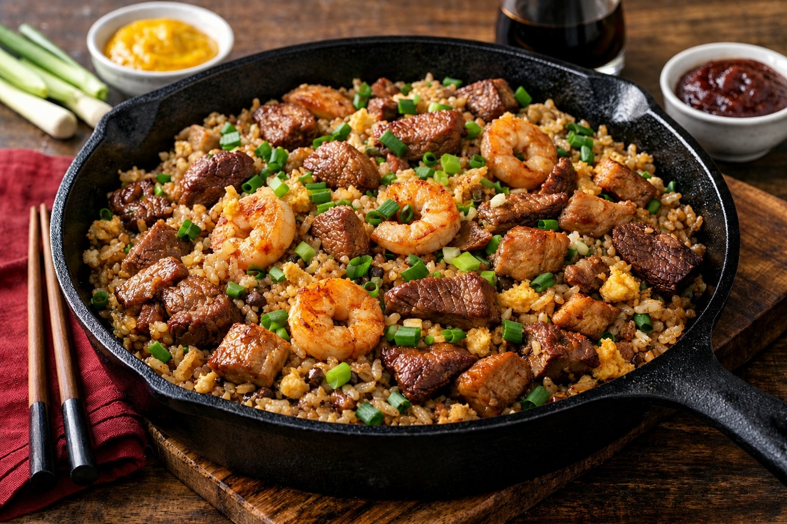

Whole Foods Recipes: Peruvian Chaufa Mixto
Last updated: March 16, 2026

A whole-food version of Peruvian chaufa mixto built around day-old rice, high heat, garlic, onion, soy sauce, avocado oil, and a mix of proteins. This first version focuses on clean ingredients, strong technique, and restaurant-style flavor without restaurant shortcuts.
- Day-old rice matters: colder, drier rice gives the best fried rice texture.
- Cook in stages: proteins should be cooked separately to avoid overcrowding the pan.
- High heat builds flavor: hot oil, garlic, onion, and rice create the characteristic chaufa aroma.
- Mixed proteins add depth: combining chicken, pork, beef, and shrimp creates a more complete flavor profile.
Purpose
Chaufa is a Chinese-Peruvian fried rice dish built on quick cooking, strong aromatics, and high heat. This version keeps the spirit of chifa cuisine while using whole ingredients that are easy to recognize and control at home.
Ingredients
Base
- 2 cups cooked cold rice (preferably day-old)
Proteins
- ¼ cup chicken, diced
- ¼ cup pork, diced
- ¼ cup steak, thin sliced
- ¼ cup shrimp
Aromatics
- 2 cloves garlic, minced
- 3 tbsp yellow onion, finely diced
Other
- 2 eggs
- 1–2 tbsp soy sauce
- 1½–2 tbsp avocado oil
- ½ tsp ají amarillo paste
- ¼ tsp ají panca paste
Finish
- 4 tbsp green onions, sliced
Equipment
- Cast iron skillet or wok
- Spatula
- Knife and cutting board
Preparation
Cut the proteins into small bite-size pieces so they cook quickly. Mince the garlic, dice the onion finely, and slice the green onions. Keep everything ready before heating the pan because the dish moves fast once cooking starts.
Method
- Heat the pan well before adding oil.
- Add about 1 tbsp avocado oil and cook the chicken first. Remove and set aside.
- Cook the pork. Remove and set aside.
- Cook the steak. Remove and set aside.
- Cook the shrimp. Remove and set aside.
- Add another ½ tbsp avocado oil if needed, then cook onion and garlic for about 30 seconds until fragrant.
- Push the aromatics to the side and add the eggs. Scramble lightly.
- Add the cold rice and break it apart with the spatula.
- Put the eggs on top of the rice and let the rice sit 30 seconds before stirring so it lightly fries.
- Add soy sauce, ají amarillo paste and aji panca paste. Mix well.
- Return all proteins to the pan and stir until heated through.
- Finish with sliced green onions.
Total time
- Prep time: about 10 minutes
- Cook time: about 7 minutes
- Total: about 17 minutes
Finish
Serve immediately while hot. Chaufa works as a complete meal on its own, but it can also be paired with additional vegetables or a simple sauce on the side.
Notes
- Rice texture: day-old rice is essential for proper fried rice texture.
- Avocado oil amount: use 1½–2 tbsp total, split across the cooking stages.
- Green onions: 4 tbsp sliced, roughly equal to 2 green onions, gives the right finishing freshness.
- Do not overcrowd the pan: cooking proteins in stages keeps the heat high and prevents steaming.
Personal note
This first version of chaufa is built around ingredients already used throughout the site: rice, garlic, onions, good oil, and simple proteins. It reflects the same broader principle behind the rest of the recipes — better ingredients and better technique make home cooking feel more satisfying than convenience food.
Next steps
Continue with more Whole Food Cooking.
This article focuses on general food quality and cooking with quality ingredients, not medical advice.